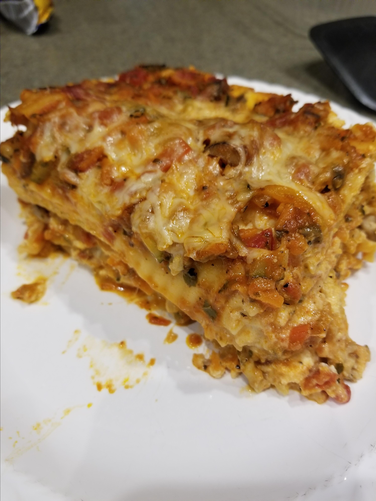

Hearty Vegetable Lasagna

Description
This hearty, vegetable lasagna is the only lasagna my husband will eat. We love it!!! Hope you all enjoy as much as we do.
Ingredients
- 16 Ounce package lasagna noodles
- 1 Pound fresh mushrooms, sliced
- 3/4 Cup chipped green bell pepper
- 3/4 Cup chopped onion
- 2 Tablespoons vegetable oil
- 2 Jar pasta Sauce
- 1 Teaspoon dried basil
- 4 Cups Shredded Mozzarella cheese
- 2 Eggs
- 1/2 Cup Grated Parmesan cheese
Steps
- Cook the lasagna noodles in a large pot of boiling water for 10 minutes, or until al dente. Rinse with cold water, and drain.
- In a large saucepan, cook and stir mushrooms, green peppers, onion, and garlic in oil. Stir in pasta sauce and basil; bring to a boil. Reduce heat, and simmer 15 minutes.
- Mix together ricotta, 2 cups mozzarella cheese, and eggs.
- Preheat oven to 350 degrees F (175 degrees C). Spread 1 cup tomato sauce into the bottom of a greased 9x13 inch baking dish. Layer 1/2 each, lasagna noodles, ricotta mix, sauce, and Parmesan cheese. Repeat layering, and top with remaining 2 cups mozzarella cheese.
- Bake, uncovered, for 40 minutes. Let stand 15 minutes before serving.
Return to Home Page